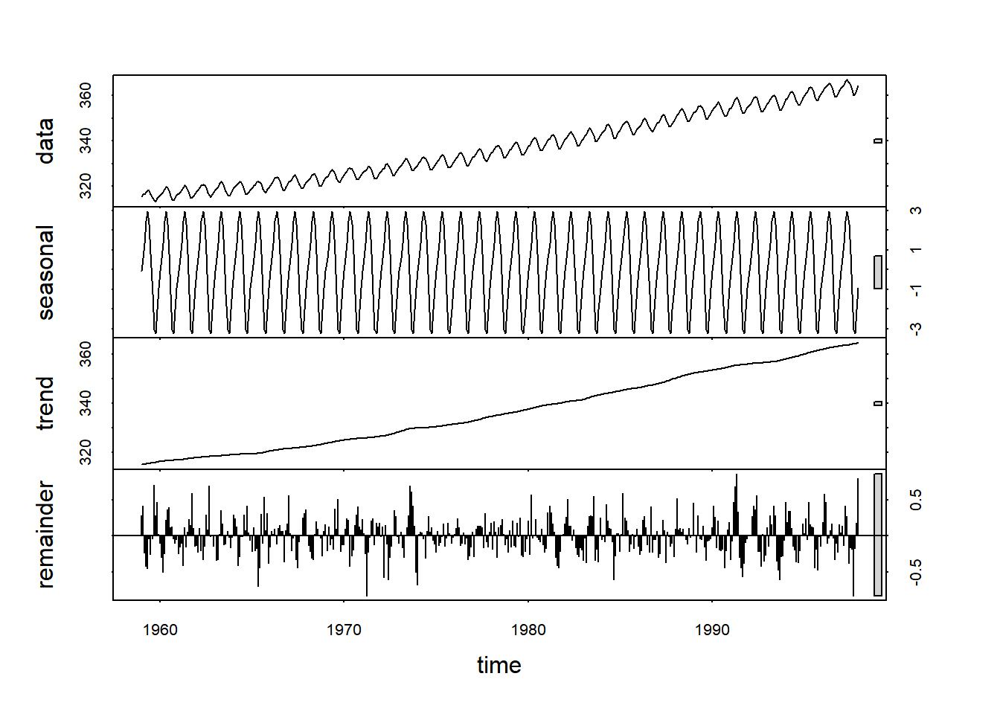
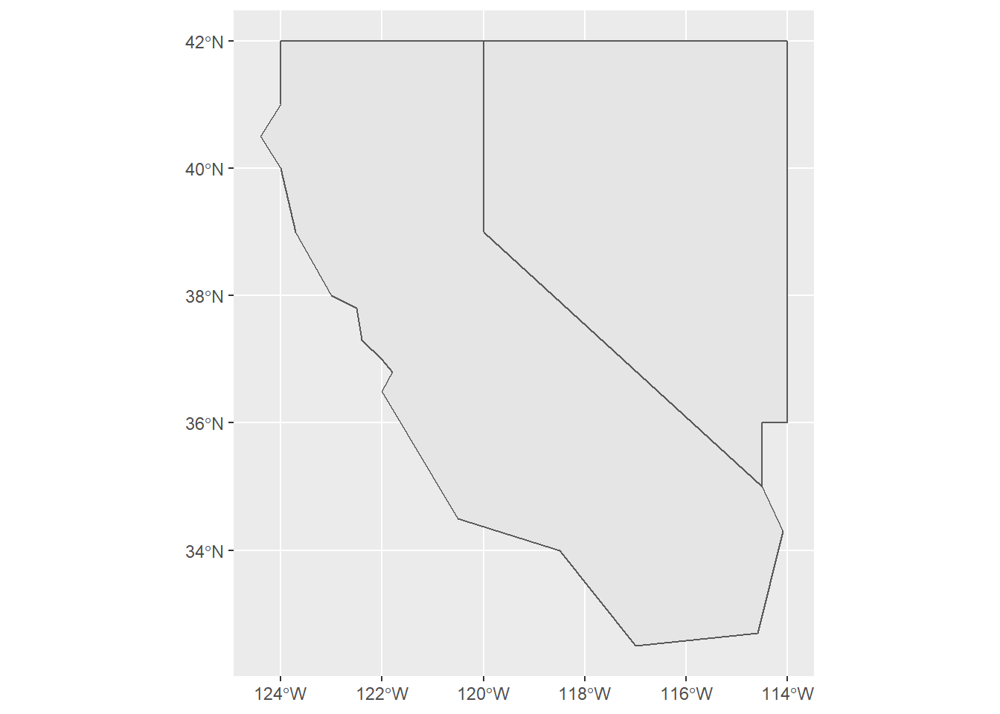
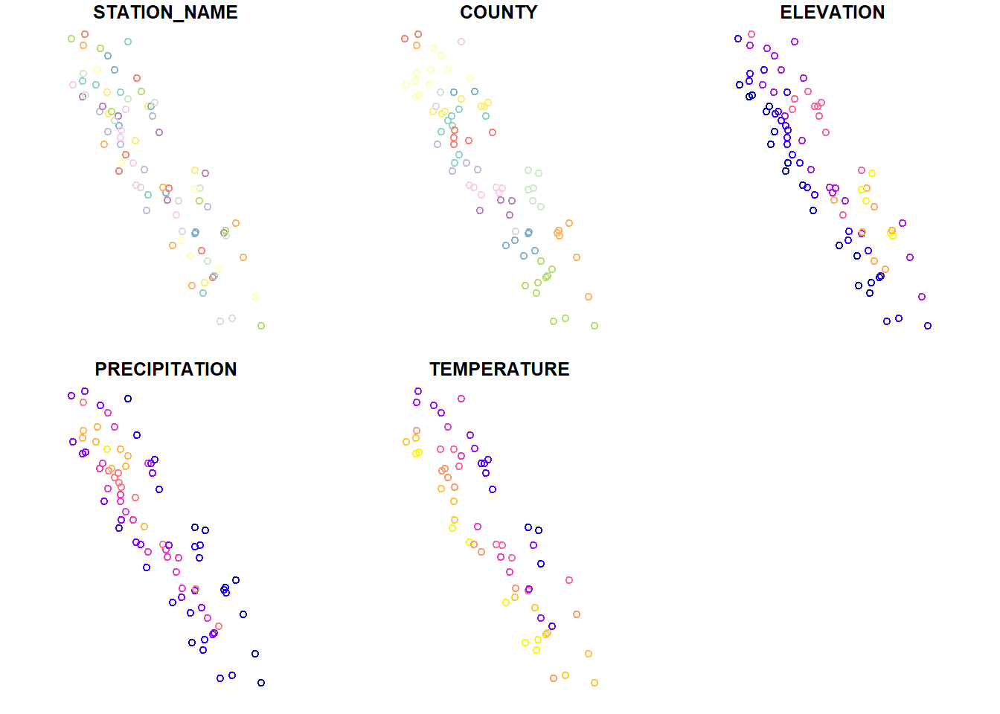
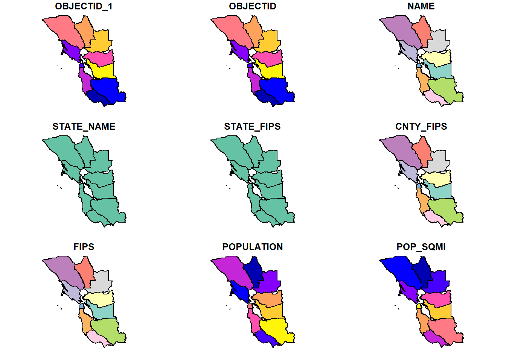
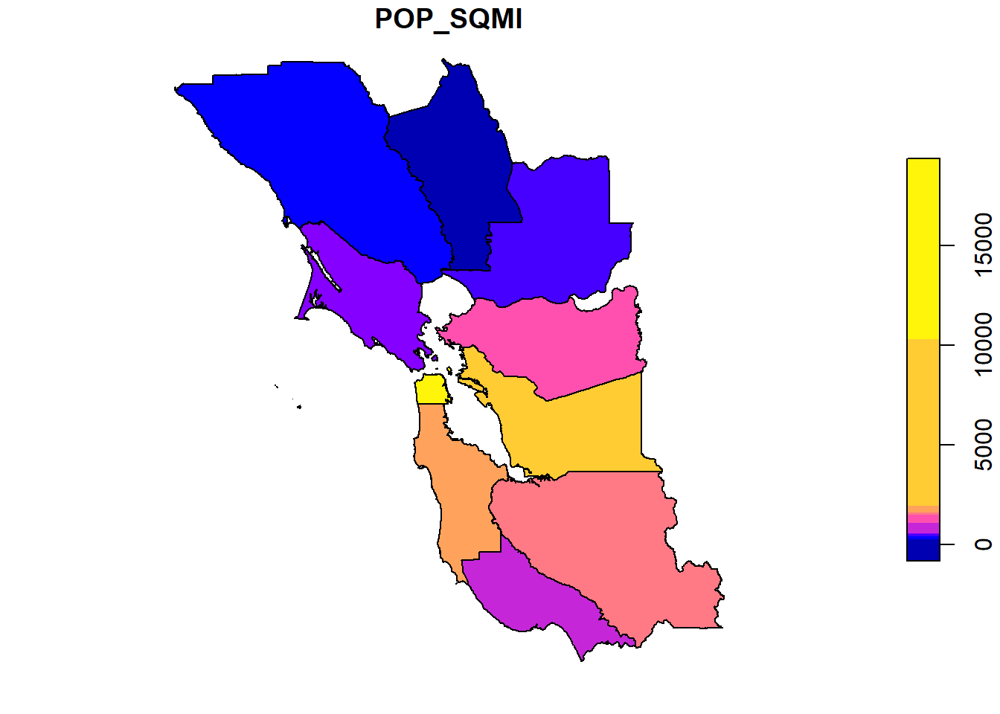
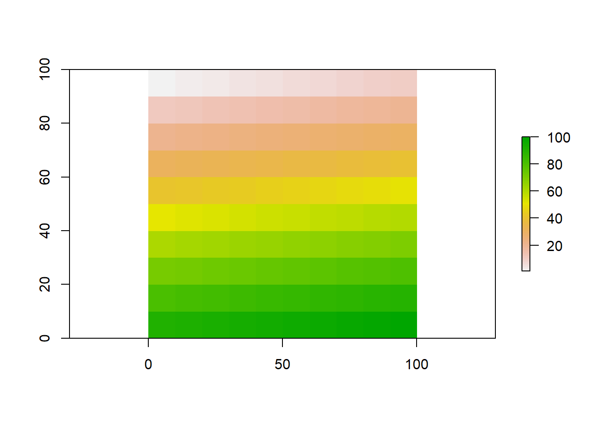
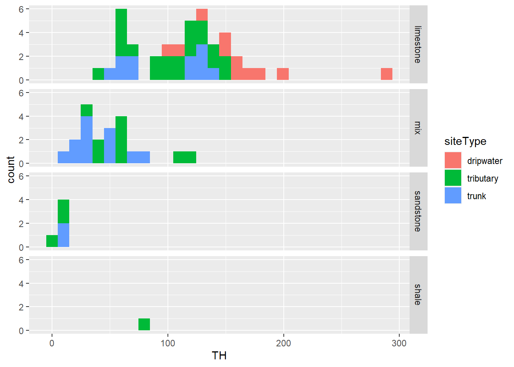
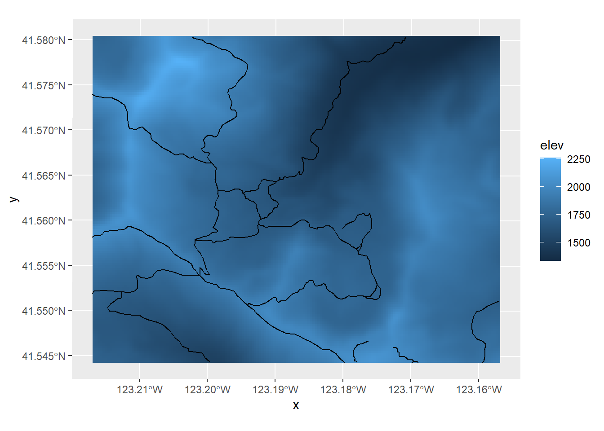

Chapter 4 Visualization
In this section we’ll explore visualization methods in R. Visualization has been a key element of R since its inception, since visualization is central to the exploratory philosophy of the language. The base plot system generally does a good job in coming up with the most likely graphical output based on the data you provide.


4.1 Introducing ggplot2
We’ll mostly focus however on gpplot2, based on the Grammar of Graphics because it provides considerable control over your graphics while remaining fairly easily readable, as long as you buy into its grammar.
ggplot2 looks at three aspects of a graph:
- data : where are the data coming from?
- geometry : what type of graph are we creating?
- aesthetics : what choices can we make about symbology and how do we connect symbology to data?
See https://rstudio.com/wp-content/uploads/2015/03/ggplot2-cheatsheet.pdf
The ggplot2 system provides plots of single and multiple variables, using various coordinate systems (including geographic).
4.2 Plotting one variable
- continuous
- histograms
- density plots
- dot plots
- discrete
- bar

4.2.1 Histogram
## Parsed with column specification:
## cols(
## DistNtoS = col_double(),
## elevation = col_double(),
## vegetation = col_character(),
## geometry = col_character(),
## phenology = col_character(),
## NDVI = col_double()
## )
Normal histogram: easier to visualize the distribution, see modes
## Parsed with column specification:
## cols(
## NAME = col_character(),
## ELEVATION = col_double(),
## LATITUDE = col_double(),
## LONGITUDE = col_double(),
## PRECIPITATION = col_double(),
## TEMPERATURE = col_double()
## )## `stat_bin()` using `bins = 30`. Pick better value with `binwidth`.
Cumulative histogram with proportions: easier to see percentiles, median
n <- length(sierraData$TEMPERATURE)
sierraData %>%
ggplot(aes(TEMPERATURE)) +
geom_histogram(aes(y=cumsum(..count..)/n), fill="dark goldenrod")## `stat_bin()` using `bins = 30`. Pick better value with `binwidth`.
4.2.2 Density Plot
Density represents how much out of the total. The total area (sum of widths of bins times densities of that bin) adds up to 1.

Note that NDVI values are <1 so bins are very small numbers, so in this case densities can be >1.
Using alpha and mapping phenology as fill color. This illustrates two useful ggplot methods:
- “mapping” a variable (phenology) to an aesthetic property (fill color of the density polygon)
- setting a a property (alpha = 0.2) to all polygons of the density plot. The alpha channel of colors defines its opacity, from invisible (0) to opaque (1) so is commonly used to set as its reverse, transparency.

## Parsed with column specification:
## cols(
## site = col_character(),
## `site #` = col_double(),
## tree = col_character(),
## Date = col_date(format = ""),
## month = col_character(),
## rain_mm = col_double(),
## rain_subcanopy = col_double(),
## slope = col_double(),
## aspect = col_double(),
## runoff_L = col_double(),
## surface_tension = col_double(),
## runoff_rainfall_ratio = col_double()
## )
4.2.3 boxplot

Get color from tree within aes()

Visualizing soil CO_2_ data with a Tukey box plot
## Parsed with column specification:
## cols(
## SITE = col_double(),
## DATE = col_character(),
## `DATE/TM` = col_character(),
## TIME = col_time(format = ""),
## `SOIL F` = col_double(),
## `SOIL C` = col_double(),
## `CO2%` = col_double()
## )co2$SITE <- factor(co2$SITE) # in order to make the numeric field a factor
ggplot(data = co2, mapping = aes(x = SITE, y = `CO2%`)) +
geom_boxplot()
4.3 Plotting two variables
4.3.1 Two continuous variables
We’ve looked at this before – the scatterplot
## Parsed with column specification:
## cols(
## STATION_NAME = col_character(),
## COUNTY = col_character(),
## ELEVATION = col_double(),
## LATITUDE = col_double(),
## LONGITUDE = col_double(),
## PRECIPITATION = col_double(),
## TEMPERATURE = col_double()
## )
- The aes (“aesthetics”) function specifies the variables to use as x and y coordinates
- geom_point creates a scatter plot of those coordinate points
Set color for all (not in aes())

- color is defined outside of aes, so is applies to all points.
- mapping is first argument of geom_point, so
mapping =is not needed.

4.4 Color systems
You can find a lot about color systems. See these sources:
http://sape.inf.usi.ch/quick-reference/ggplot2/colour http://applied-r.com/rcolorbrewer-palettes/
4.4.1 Color from variable, in aesthetics
In this graph, color is defined inside aes, so is based on COUNTY
## Parsed with column specification:
## cols(
## STATION_NAME = col_character(),
## COUNTY = col_character(),
## ELEVATION = col_double(),
## LATITUDE = col_double(),
## LONGITUDE = col_double(),
## PRECIPITATION = col_double(),
## TEMPERATURE = col_double()
## )
Plotting lines using the same x,y in aesthetics

Note the use of pipe to start with the data then apply ggplot.
River map & profile
x <- c(1000, 1100, 1300, 1500, 1600, 1800, 1900)
y <- c(500, 700, 800, 1000, 1200, 1300, 1500)
z <- c(0, 1, 2, 5, 25, 75, 150)
d <- rep(NA, length(x))
longd <- rep(NA, length(x))
s <- rep(NA, length(x))
for(i in 1:length(x)){
if(i==1){longd[i] <- 0; d[i] <-0}
else{
d[i] <- sqrt((x[i]-x[i-1])^2 + (y[i]-y[i-1])^2)
longd[i] <- longd[i-1] + d[i]
s[i-1] <- (z[i]-z[i-1])/d[i]}}
longprofile <- bind_cols(x=x,y=y,z=z,d=d,longd=longd,s=s)
ggplot(longprofile, aes(x,y)) +
geom_line(mapping=aes(col=s), size=1.2) +
geom_point(mapping=aes(col=s, size=z)) +
coord_fixed(ratio=1) + scale_color_gradient(low="green", high="red") +
ggtitle("Simulated river path, elevations and slopes")ggplot(longprofile, aes(longd,z)) + geom_line(aes(col=s), size=1.5) + geom_point() +
scale_color_gradient(low="green", high="red") +
ggtitle("Elevation over longitudinal distance upstream")
ggplot(longprofile, aes(longd,s)) + geom_point(aes(col=s), size=3) +
scale_color_gradient(low="green", high="red") +
ggtitle("Slope over longitudinal distance upstream")## Warning: Removed 1 rows containing missing values (geom_point).
4.4.2 Trend line
sierra %>%
ggplot(aes(TEMPERATURE,ELEVATION)) +
geom_point(color="blue") +
geom_smooth(color="red", method="lm")## `geom_smooth()` using formula 'y ~ x'## Warning: Removed 20 rows containing non-finite values (stat_smooth).## Warning: Removed 20 rows containing missing values (geom_point).
4.4.3 General symbology
A useful vignette lets you see aesthetic specifications for symbols, including:
- Color & fill
- Lines
- line type, size, ends
- Polygon
- border color, linetype, size
- fill
- Points
- shape
- size
- color & fill
- stroke
- Text
- font face & size
- justification
## starting httpd help server ... done4.4.3.1 Categorical symbology
EPA Toxic Release Inventory. A big data set needing symbology to try to make sense of it.
TRI <- read_csv("data/TRI_2017_CA.csv") %>%
filter(`5.1_FUGITIVE_AIR` > 100 & `5.2_STACK_AIR` > 100)## Warning: Missing column names filled in: 'X110' [110]## Warning: 3807 parsing failures.
## row col expected actual file
## 1 -- 110 columns 109 columns 'data/TRI_2017_CA.csv'
## 2 -- 110 columns 109 columns 'data/TRI_2017_CA.csv'
## 3 -- 110 columns 109 columns 'data/TRI_2017_CA.csv'
## 4 -- 110 columns 109 columns 'data/TRI_2017_CA.csv'
## 5 -- 110 columns 109 columns 'data/TRI_2017_CA.csv'
## ... ... ........... ........... ......................
## See problems(...) for more details.ggplot(data = TRI, aes(log(`5.2_STACK_AIR`), log(`5.1_FUGITIVE_AIR`),
color = INDUSTRY_SECTOR)) +
geom_point()
4.4.3.2 Graphs from grouped data
XSptsPheno %>%
ggplot() +
geom_point(aes(elevation, NDVI, shape=vegetation,
color = phenology), size = 3) +
geom_smooth(aes(elevation, NDVI,
color = phenology), method="lm") ## `geom_smooth()` using formula 'y ~ x'
ggplot(data = eucoak) +
geom_point(mapping = aes(x = rain_mm, y = runoff_L, color = tree)) +
geom_smooth(mapping = aes(x = rain_mm, y= runoff_L, color = tree),
method = "lm") +
scale_color_manual(values = c("seagreen4", "orange3"))## `geom_smooth()` using formula 'y ~ x'

4.5 Titles and subtitles
ggplot(data = runoffEucOak) +
geom_point(aes(x=rain_mm,y=runoff_L, color=tree)) +
geom_smooth(aes(x=rain_mm,y=runoff_L, color=tree), method="lm") +
scale_color_manual(values=c("seagreen4","orange3")) +
labs(title="rainfall ~ runoff",
subtitle="eucalyptus & oak sites, 2016")## `geom_smooth()` using formula 'y ~ x'
4.6 Pairs Plot
 There are many versions of pairs plots. Here’s one from GGally (need to
There are many versions of pairs plots. Here’s one from GGally (need to install.packages("GGally") first):
## Registered S3 method overwritten by 'GGally':
## method from
## +.gg ggplot2